第一步是加载以下包:
创建一个矩阵。cbind()函数获取数字序列并创建一个矩阵。然后将结果传递给matrix()函数，该函数创建两行矩阵。然后将结果存储在矩阵中:
步骤 2 -创建模型
> install.packages("graphics")
> install.packages("splines")
> library(graphics)
> library(splines)
乔莱斯基因式分解创建正定矩阵 A ，可分解为A = LLTT35】，其中 L 是具有正对角元素的下三角。函数计算一个实的、对称的、正定的方阵的 Cholesky 分解。然后将结果存储在cholsky中:
> matrx = matrix(cbind(1,.99, .99,1),nrow=2)
Step 2 - creating the model
Cholesky factorization creates positive-definite matrix A, which can be factored as A=LLT, where L is lower triangular with positive diagonal elements. The chol() function computes Cholesky factorization of a real, symmetrical, positive-definite square matrix. The result is then stored in cholsky:
> cholsky = t(chol(matrx))
> nvars = dim(cholsky)[1]
密度分布的观察次数:
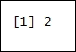
使用正态分布计算矩阵。rnorm()计算正态分布，用numobs作为要使用的观察值的数量。然后，matrix()函数将结果用于计算矩阵，其中nrow=nvars为两行，ncol=numobs为 1000 列。结果存储在random_normal中:
执行矩阵乘法。cholsky乘以矩阵random_normal:
> numobs = 1000
> set.seed(1)
转置矩阵X:
> random_normal = matrix(rnorm(nvars*numobs,10,1), nrow=nvars, ncol=numobs)
创建矩阵的数据框。as.data.frame()函数创建数据框原始的、紧密耦合的变量集合，这些变量共享矩阵newX的许多属性:
> X = cholsky %*% random_normal
打印原始数据帧。head()函数返回原始数据帧的第一部分。原始数据帧作为输入参数传递:
> newX = t(X)
结果如下:
> raw = as.data.frame(newX)
Printing the raw data frame. The head() function returns the first part of the raw data frame. The raw data frame is passed as an input parameter:
> head(raw)
The result is as follows:
创建random_normal的转置数据帧。t()函数创建random_normal矩阵的转置矩阵，然后将其转换为紧密耦合的变量集合。这些共享矩阵的许多属性:
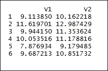
将名称响应和predictor1结合起来。c()函数将参数 response 和predictor1组合成一个向量:
raw$predictor1的 3 次方指数增长:
> raw_original = as.data.frame(t(random_normal))
打印raw$predictor1_3数据框。head()函数返回raw$predictor1_3数据帧的第一部分。raw$predictor1_3data帧作为输入参数传递:
> names(raw) = c("response","predictor1")
结果如下:
> raw$predictor1_3 = raw$predictor1^3
Printing the raw$predictor1_3 data frame. The head() function returns the first part of the raw$predictor1_3 data frame. The raw$predictor1_3data frame is passed as an input parameter:
> head(raw$predictor1_3)
The result is as follows:
raw$predictor1的 2 次方指数增长:
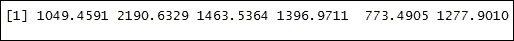
打印raw$predictor1_2数据帧。head()函数返回raw$predictor1_2数据帧的第一部分。raw$predictor1_2数据帧作为输入参数传递:
结果如下:
> raw$predictor1_2 = raw$predictor1^2
以raw$response ~ raw$predictor1_3为公式建立普通最小二乘估计。lm()函数用于拟合线性模型。raw$response ~ raw$predictor1_3是公式。然后将结果存储在拟合数据框中:
> head(raw$predictor1_2)
打印拟合数据框:
结果如下:
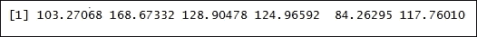
Building an ordinary least squares estimation with raw$response ~ raw$predictor1_3 as the formula. The lm() function is used to fit linear models. raw$response ~ raw$predictor1_3 is the formula. The result is then stored in the fit data frame:
> fit = lm(raw$response ~ raw$predictor1_3)
普通最小二乘估计公式的绘制。plot()功能是用于绘制 R 对象的通用功能。raw$response ~ raw$predictor1_3公式作为函数值传递:
> fit
结果如下:
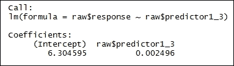
通过当前图添加直线函数:
> plot(raw$response ~ raw$predictor1_3, pch=16, cex=.4, xlab="Predictor", ylab="Response", col ="red", main="Simulated Data with Slight Curve")
结果如下:
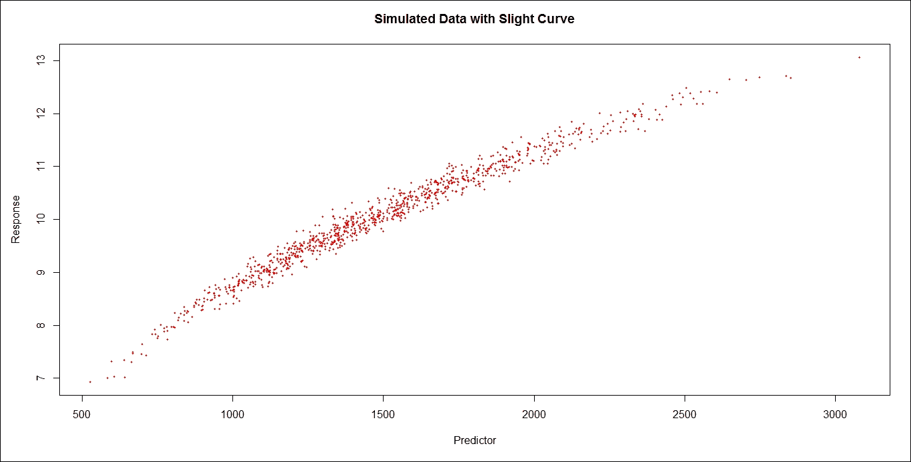
在 x 轴上拟合汽车和速度值:
> abline(fit)
拟合 y 轴上的汽车和速度值:
设置平滑曲线评估的点数:
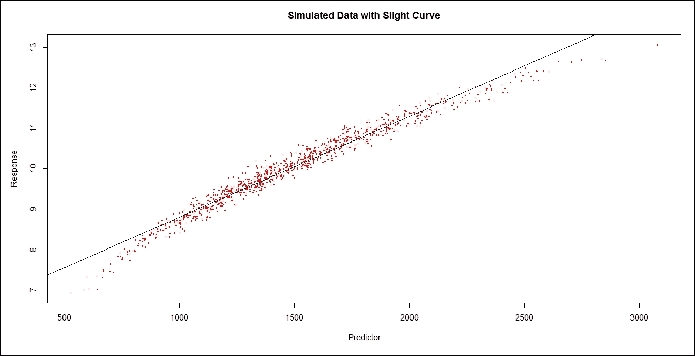
步骤 3 -拟合平滑曲线模型
拟合两个变量之间的平滑曲线是一种非参数方法，因为传统回归方法的线性假设已经放宽。它被称为局部回归，因为在例如点 x 处的拟合被加权到最接近 x 的数据。
> x_axis <- with(cars, speed)
loess.smooth()函数绘制并添加一条计算出的平滑曲线到散点图。x_axis、y_axis是提供给绘图的 x 和 y 坐标的参数。evaluation = eval.length例如eval_length = 50，代表平滑曲线评估的点。span=.75是平滑度参数。degree=1是局部多项式的次数:
> y_axis <- with(cars, dist)
打印fit_loess数据帧:
> eval_length = 50
Fitting a smooth curve between two variables is a non-parametric method, because the linearity assumptions of conventional regression methods have been relaxed. It is called local regression, because the fitting at, say, point x, is weighted toward the data nearest to x.
The loess.smooth() function plots and adds a smooth curve computed to a scatter plot. x_axis, y_axis are the arguments provided to the x and y coordinates of the plot. evaluation = eval.length for example eval_length = 50, represents the points for smooth curve evaluation. span=.75 is the smoothness parameter. degree=1 is the degree of the local polynomial:
> fit_loess <- loess.smooth(x_axis, y_axis, evaluation = eval_length, family="gaussian", span=.75, degree=1)
使用局部拟合，根据一个或多个数值预测值来拟合多项式曲面。loess()函数拟合多项式曲面。y_axis ~ x_axis代表公式。span=.75是平滑度参数。degree=1是局部多项式的次数:
> fit_loess
打印fit_loess_2数据帧:
结果如下:
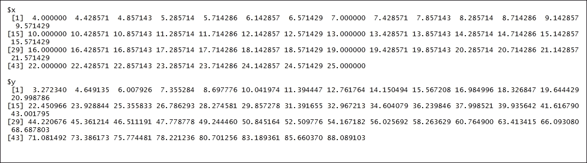
Fitting a polynomial surface on the basis of one or more numerical predictors, using local fitting. The loess() function fits the polynomial surface. y_axis ~ x_axis represents the formula. span=.75 is the smoothness parameter. degree=1 is the degree of the local polynomial:
> fit_loess_2 <- loess(y_axis ~ x_axis, family="gaussian", span=.75, degree=1)
生成 y 轴的最小和最大值的规则序列。Seq()函数以length.out=eval_length为例eval_length = 50，表示从 x 轴的最小和最大值生成的序列的期望长度:
> fit_loess_2
打印new_x_axis数据框:
结果如下:
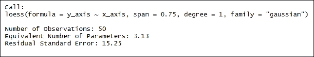
Generating regular sequences of minimum and maximum values of the y axis. The Seq() function takes in length.out=eval_length for example eval_length = 50, which indicates the desired length of the sequence to be generated from the minimum and maximum values of the x axis:
> new_x_axis = seq(min(x_axis),max(x_axis), length.out=eval_length)
在fit.loess模型上设置 95%的置信水平:
> new_x_axis
以y_axis ~ x_axis为公式建立普通最小二乘估计。lm()函数用于拟合线性模型。y_axis ~ x_axis是公式。然后将结果存储在fit_lm数据帧中:
打印fit_lm数据框:
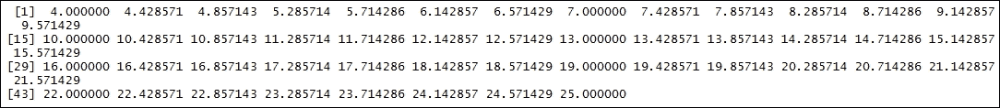
结果如下:
Setting a confidence level of 95% on the fit.loess model:
> conf_int = cbind(
+ predict(fit_loess_2, data.frame(x=new_x_axis)),
+ predict(fit_loess_2, data.frame(x=new_x_axis))+
+ predict(fit_loess_2, data.frame(x=new_x_axis), se=TRUE)$se.fit*qnorm(1-.05/2),
+ predict(fit_loess_2, data.frame(x=new_x_axis))-
+ predict(fit_loess_2, data.frame(x=new_x_axis), se=TRUE)$se.fit*qnorm(1-.05/2)
+ )
Building an ordinary least squares estimation with y_axis ~ x_axis as the formula. The lm() function is used to fit linear models. y_axis ~ x_axis is the formula. The result is then stored in the fit_lm data frame:
> fit_lm = lm(y_axis ~ x_axis)
构建多项式函数。y_axis ~ poly(x_axis,3)是三个自由度的多项式函数。lm()功能用于拟合线性模型。y_axis ~ poly(x_axis,3)是公式。然后将结果存储在fit_poly数据帧中:
> fit_lm
打印fit_poly数据帧:
结果如下:
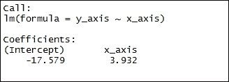
Building a polynomial function. y_axis ~ poly(x_axis,3) is a polynomial function with three degrees of freedom. The lm() function is used to fit linear models. y_axis ~ poly(x_axis,3) is the formula. The result is then stored in the fit_poly data frame:
> fit_poly = lm(y_axis ~ poly(x_axis,3) )
构建自然样条函数。y_axis ~ ns(x_axis, 3)是自由度为 3 的自然样条函数。lm()功能用于拟合线性模型。y_axis ~ ns(x_axis, 3)是公式。然后将结果存储在fit_nat_spline数据帧中:
> fit_poly
打印fit_nat_spline数据帧:
结果如下:
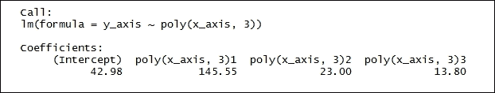
Building a natural spline function. y_axis ~ ns(x_axis, 3) is the natural spline function with degree 3 of freedom. The lm() function is used to fit linear models. y_axis ~ ns(x_axis, 3) is the formula. The result is then stored in the fit_nat_spline data frame:
> fit_nat_spline = lm(y_axis ~ ns(x_axis, 3) )
样条曲线的平滑:
> fit_nat_spline
打印fit_smth_spline数据帧:
结果如下:
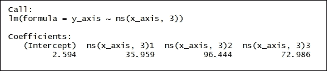
Smoothing of the spline:
> fit_smth_spline <- smooth.spline(y_axis ~ x_axis, nknots=15)
第 4 步-绘制结果
> fit_smth_spline
绘制模型:
结果如下:
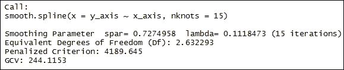
Step 4 - plotting the results
向图表中添加其他模型。用置信区间绘制黄土；
> plot(x_axis, y_axis, xlim=c(min(x_axis),max(x_axis)), ylim=c(min(y_axis),max(y_axis)), pch=16, cex=.5, ylab = "Stopping Distance (feet)", xlab= "Speed (MPH)", main="Comparison of Models", sub="Splines")
结果如下:
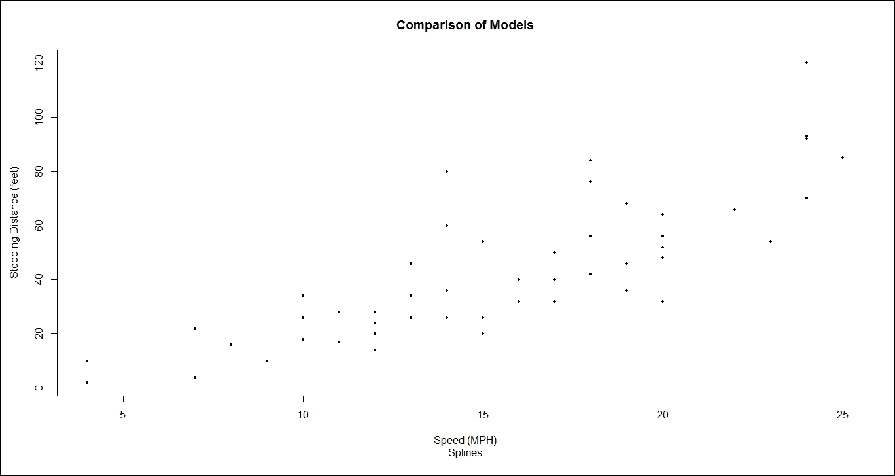
绘制普通最小二乘估计。predict()函数根据线性模型预测值。fit_lm是类lm的对象:
> matplot(new_x_axis, conf_int, lty = c(1,2,2), col=c(1,2,2), type = "l", add=T)
结果如下:
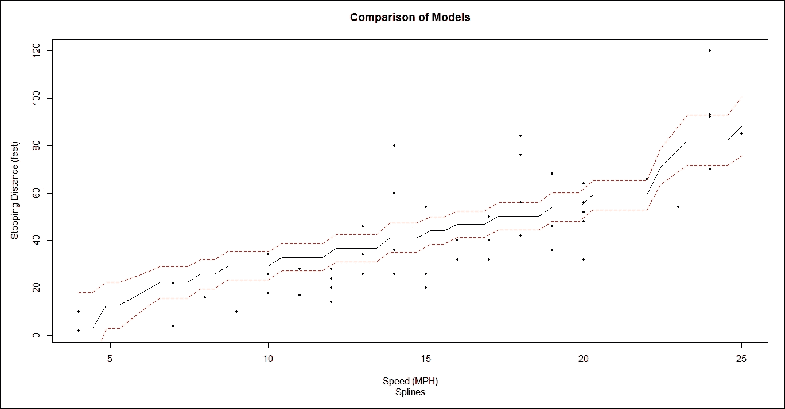
绘制多项式函数估计:
> lines(new_x_axis, predict(fit_lm, data.frame(x=new_x_axis)), col="red", lty=3)
结果如下:
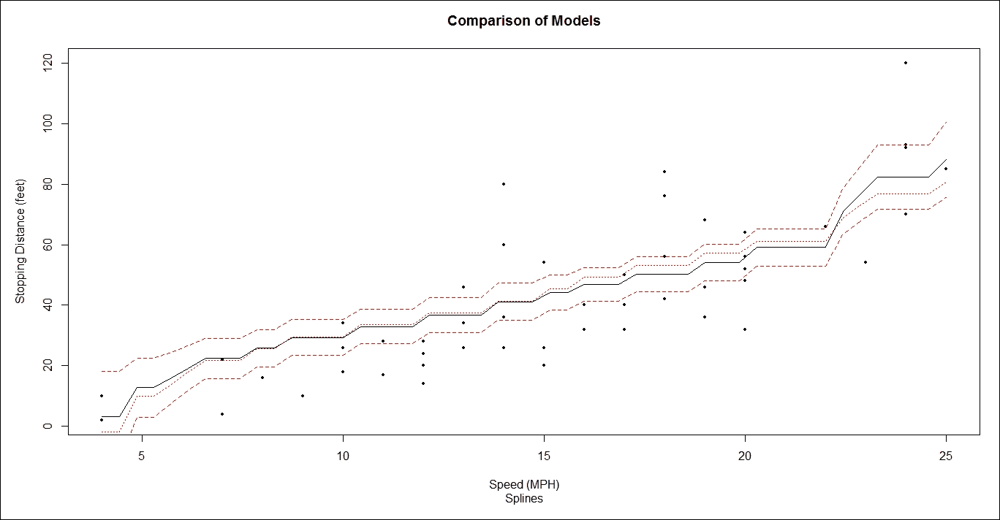
绘制自然样条函数:
> lines(new_x_axis, predict(fit_poly, data.frame(x=new_x_axis)), col="blue", lty=4)
结果如下:
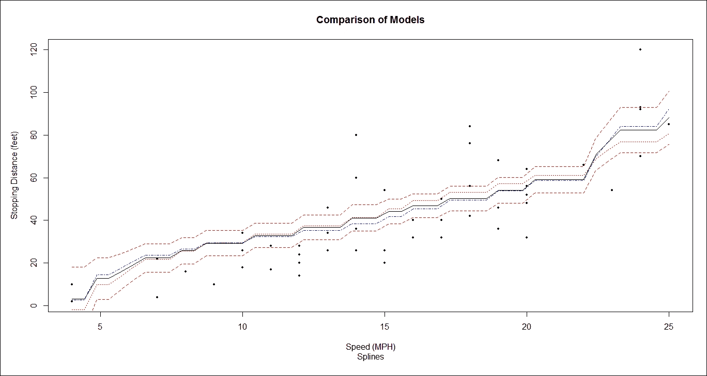
绘制平滑样条曲线:
> lines(new_x_axis, predict(fit_nat_spline, data.frame(x=new_x_axis)), col="green", lty=5)
结果如下:
绘制内核曲线。ksmooth()功能:
> lines(fit_smth_spline, col="dark grey", lty=6)
结果如下:
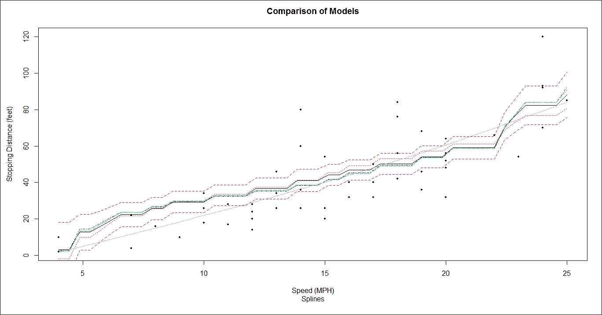
局部回归——了解干旱预警和影响
> lines(ksmooth(x_axis, y_axis, "normal", bandwidth = 5), col = 'purple', lty=7)
干旱是一种自然灾害，其特点是降雨量低于预期或低于正常水平。这种情况如果持续时间超过正常时间，就不足以满足人类活动的需求，并且对环境有害。干旱是一种暂时现象。干旱的三个主要特征是强度、持续时间和空间覆盖范围。干旱预警系统可以帮助识别气候变化，了解供水趋势，并为即将到来的紧急情况做好准备。干旱预警可以帮助决策者采取适当的措施来面对即将到来的挑战。然后，他们可以衡量影响的严重性，并了解脆弱性的根本原因，以降低特定位置、特定人群或经济部门的风险。
准备就绪
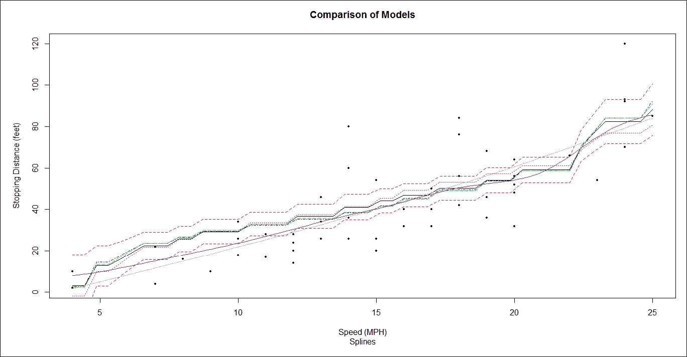
让我们从食谱开始吧。